ARTICULAȚII CA ÎN TINEREȚE? ACUM ESTE REALITATE!
Material publicatPaulina Bogza După tratamentul ARTICULAȚIILOR, pot face chiar și sfoara!
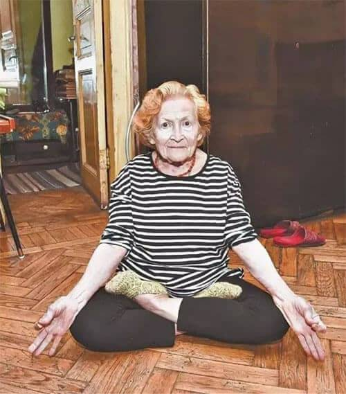
Astăzi vă vom spune o poveste interesantă despre miracole care se întâmplă uneori. E adevărat însă că în spatele lor adesea sunt ultimele realizări ale științei. Corespondentul nostru a intervievat-o pe dna Paulina Bogza, în vârstă de 80 de ani, care a suferit mult timp de artroza articulațiilor genunchilor, iar acum. Datorită tratamentului modern, ea poate face sfoara și se poate așeza în postura de lotus! Femeia de vârsta a treia acum arată bine și pentru a-și accentua energia și viabilitatea a fost de acord să ofere un interviu și să-și demonstreze flexibilitatea!

Orașul natal al dnei Bogza este Bucureștiul. Ea este o pensionară română tipică. S-a născut în timpul războiului. După școala generală a absolvit școala medicală. A lucrat în calitate de infirmieră. A fost înrolată și în armată. Are premii guvernamentale. Așa s-a întâmplat că dna Bogza a plecat din București, s-a stabilit în Constanța și a mers să lucreze la o uzină de cărămidă, în atelierul de ardere. A avut parte de toate: a împins cărucioarele cu cărămizi în cuptor, a lucrat pe timp de iarnă în curenți de aer rece având în spate un cuptor încins. În față minus 5, iar în spate plus 60 de grade.
Serviciul în armată și munca grea nu au putut să nu afecteze sănătatea femeii. Au apărut tot felul de boli, dar cel mai mult o supărau articulațiile. Și-au spus cuvântul și zilele de lucru în armată în zăpadă, în frig, în umezeală. Și munca grea la fabrica de cărămidă.
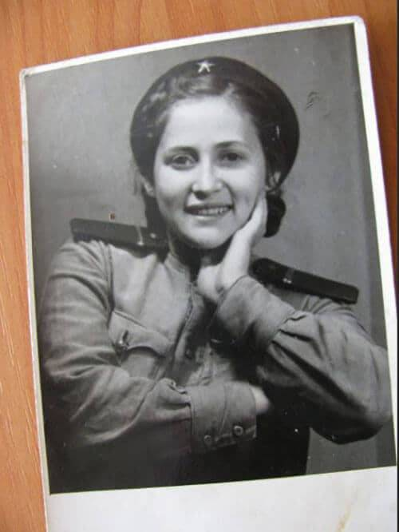
Anume așa dna Bogza a făcut osteoartrită a articulațiilor genunchiului. Un timp femeia a luptat cu boala. Mergea la medici (atâta timp cât mai putea merge), lua toate medicamentele prescrise, bea diferite decocturi, aplica unguente. Dar boala a progresat. Fiecare pas îi aducea femeii dureri teribile la care îi dădeau lacrimile. La 70 de ani, a cedat și a căzut la pat.
„Nu mai aveam puteri să suport aceste chinuri”, se destăinuie pensionara corespondentului nostru. - M-am hotărât să mor."
Fiind un copil de război, fost lucrător al armatei, i s-a oferit să fie înlocuite articulațiile cu proteze în condiții preferențiale. Dar oricum, chiar și în astfel de condiții, costul înlocuirii depășea 4 mii de euro pentru o proteză.
„Nu aveam așa sume de bani. Și de operația propriu-zisă îmi era frică. Totuși, 75 de ani nu sunt o glumă. Am decis să las totul așa cum este", își amintește dna Bogza.
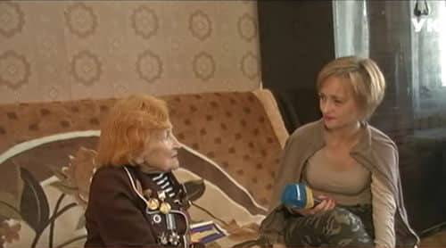
Și apoi sa întâmplat ceea ce dna Bogza încă consideră un miracol. Din întâmplare, a aflat de la vecină că în orașul lor a început să lucreze, un medic renumit, care vindecă cu ușurință bolile articulațiilor – artrozele, artritele etc. Că are un gel miraculos care ridică într-o lună oamenii din scaunul cu rotile. De exemplu, acest medic a vindecat o rudă a primarului, care, din cauza problemelor cu articulațiile picioarelor timp de zece ani a fost țintintă de scaunul cu rotile.
„Mi-am sunat imediat fiica. Ea locuiește la București. Ea a venit, a contactat acest medic și acesta a fost de acord să mă ajute", își amintește dna Bogza.
Apoi s-a întâmplat un adevărat miracol. Acest medic venea în fiecare zi la dna Bogza acasă și îi făcea frecții cu acest gel cu efect terapeutic. Deja după 4 săptămâni, ea a reușit să se ridice din scaunul cu rotile și să vină singură la medic. După șase săptămâni, articulațiile dnei Bogza au scăpat complet de artroză. Ceea ce a fost confirmat și de radiografie.
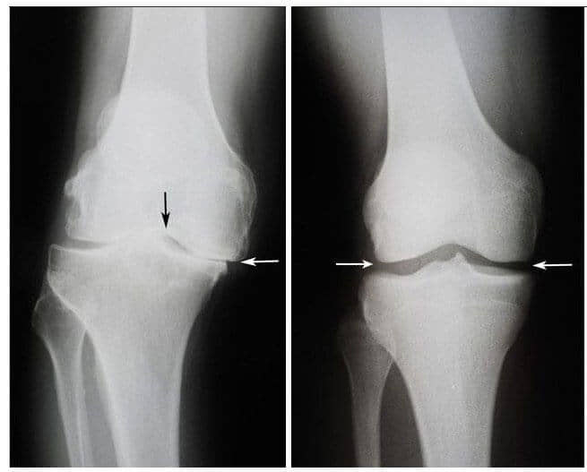
Stânga: radiografia genunchiului drept al dnei Bogza la 75 de ani. Țesutul cartilaginos este practic complet distrus. Recomandările medicilor - înlocuirea articulației cu o proteză.
Dreapta: radiografia articulației genunchiului drept al dnei Bogza după cura de tratament cu preparatul „Artrovex".
Dar acesta nu este sfârșitul poveștii!
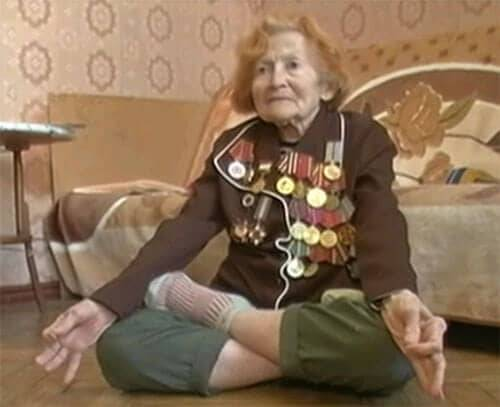
„Știți, după tratament, am simțit că picioarele mele au devenit la fel cum erau în tinerețe când lucram și eram plină de putere! Și am început să fac exerciții pe care nu le-am mai făcut de 40 de ani. Am început cu genuflexiuni și alte exerciții simple. O lună mai târziu am început să sar, apoi să sar cu coarda.”
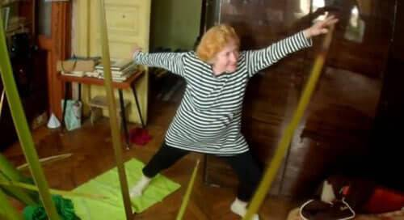
„Apoi am decis să fac sfoara! Am exersat o lună și am reușit! Nicio durere în genunchi. Articulațiile sunt ca noi! Sunt foarte recunoscătoare medicului meu.”
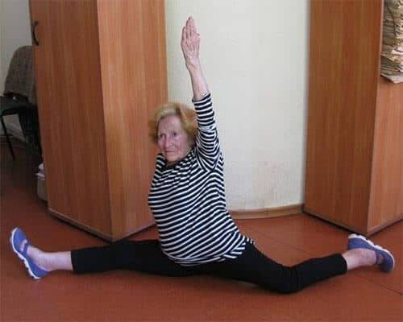
Din partea redacției:
Am aflat numele medicului care a tratat-o pe dna Bogza. El se numește Matei Bartoș, medic emerit cu o experiență practică de treizeci de ani. Ne-am întâlnit cu dl Bartoș și dumnealui ne-a vorbit despre medicamentul său.
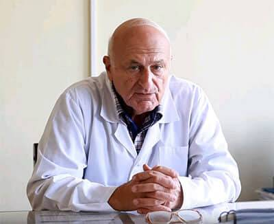 Matei Bartoș
Medic emerit, doctor în științe medicale, profesor universitar. Fondatorul kinetoterapiei moderne - o metodă alternativă (neurologie și ortopedie) de tratare a bolilor cronice și a leziunilor sistemului musculoscheletal, punctul de referință în care este pus pe rezervele interne ale organismului fără utilizarea medicamentelor sau purtarea de orteze și înțelegerea de către pacienți a propriului corp.
- Domnul Bartoș, spuneți-ne mai multe despre preparatul pe care îl utilizați.
- Este vorba de preparatul „Artrovex” . Acesta este un gel cu efect terapeutic, care permite în cel mai scurt timp, literalmente începând cu 4 zile, să uitați de dureri de spate și articulații și, în câteva luni, să vindecați chiar și cazurile foarte complexe. El se produce numai în în Siberia și pentru dezvoltarea formulării sale au fost cheltuite 1,3 milioane de dolari.
— Și cum funcționează acest gel miraculos?
— Nu este niciun miracol, este știința pură. Principalul ingredient al medicamentului este extractul de coarne cerb de Altai: anume acea substanță care asigură creșterea activă a coarnelor animalului. Adică, sarcina sa principală este crearea unui nou țesut osos. Cerbul de Altai se hrănește în mod constant cu sute de tipuri de plante medicinale din Altai și toată puterea lor de vindecare se acumulează în coarnele sale. Vă puteți imagina puterea biologică a unui astfel de mecanism? Nimic mai eficient pentru repararea țesutului cartilaginos al articulațiilor în natură nu există încă. În plus, coarnele conțin condrotină naturală și glucozamină, care ajută la eliminarea durerilor articulare și la restabilirea funcțiilor lor. În plus, extracte de plante rare din Altai, care contribuie semnificativ la eficacitatea preparatului. Despre beneficiile ierburilor de Altai, cred că nu are rost să vorbim.
Chiar și o singură aplicare este suficientă pentru a activa mai mult de 930 000 de celule care participă direct la procesul de flux sanguin. Și așa de fiecare dată. Aceasta este principiul cheie al tratamentului.
- Sună impresionant. Doar explicați-ne ce înseamnă acest lucru pentru oamenii obișnuiți bolnavi?
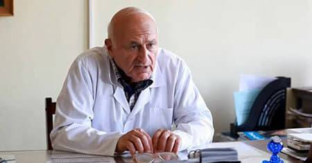
— Aceasta înseamnă că medicina medievală ține de trecut și puteți vindeca bolile articulare acasă timp de o lună sau două. Artrovex nu îngheață, nu anesteziază, ci „repornește" organismul la nivel celular. Elimină cauza durerii în sine și readuce articulațiile la starea inițială, normală. Pacientul nu numai scapă de simptome, ci acționează asupra originii bolii - țesutului cartilaginos al articulației slăbit de timp și cu modificări degenerative.
Chiar din prima zi Artrovex lansează sistemele de regenerare a organismului. Bineînțeles și reduce durerea, acest efect îl veți simți imediat. Deja după două-trei săptămâni, tratamentul va fi finalizat și, cel mai important, nu permiteți reapariția durerii, repetând la scurt timp cura.
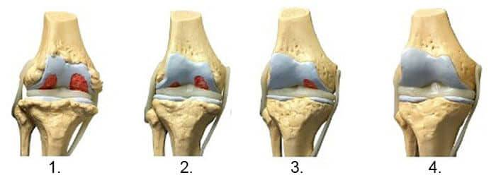
1. Lipsa alimentației articulației. Țesutul cartilaginos se distruge.
2. Regenerarea țesutului cartilaginos al articulației după 2 săptămâni de utilizare a „Artrovex”.
3. Regenerarea țesutului cartilaginos al articulației după 3 săptămâni de utilizare a „Artrovex”.
4. Articulație sănătoasă după terminarea curei cu „Artrovex”.
- Imaginea radiografică de mai jos prezintă un model tipic de regenerare a articulației genunchiului.
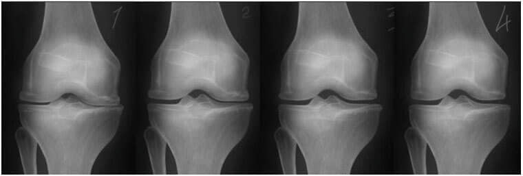
- Datorită „Artrovex” vă puteți vindeca bolile acasă timp de o lună sau două. „Artrovex” nu îngheață, nu anesteziază, ci „repornește" organismul la nivel celular. Elimină cauza durerii în sine și readuce articulațiile la starea inițială, normală.
- Ați spus că „Artrovex” poate vindeca în mod independent artroza în 4-6 săptămâni. Dar unde poate cumpărat acest gel?
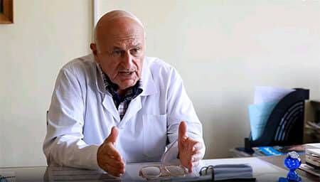
- Pot spune cu bucurie că în cele din urmă Ministerul Sănătății a atras atenția cuvenită acestei invenții a oamenilor de știință și a implementat un program de distribuire în rândurile populației „Artrovex” în cadrul tombolei.
Datorită programului de stat acum în cadrul unei tombole speciale puteți obține Artrovex cu o reducere de până la 50% !
Adevărat, există un „dar”. Termenul promoției este limitat, de la până la .
— Domnul Bartoș, vă mulțumesc pentru interviu! Poate doriți să spuneți ceva cititorilor noștri în final?
— Da! Da, desigur. Vreau să vă atrag atenția asupra numărului mare de falsuri din farmaciile noastre. De regulă, sunt falsificate cele mai populare și mai întrebate produse. Din păcate, popularitatea Artrovex nu lasă nicio îndoială că, în curând, și aici va fi produs un număr foarte mare de falsuri. Am avut deja de a face cu falsuri , prin urmare, îndemn toată lumea să achiziționeze Artrovex numai de la vânzătorii de încredere, sau în cadrul tombolei programului de stat.
ATENȚIE! Feriți-vă de falsuri!
la
soldul lotului cu preț redus constituie:
23 buc.
23 buc.
Poți să completezi formularul și să primești „Artrovex” la un preț redus de 159 RON :
Încearcă-ți norocul!
Fă clic pe roată! Încearcă să obții o reducere la preparatul nostru sau chiar să-l iei cu reducere de 50% !